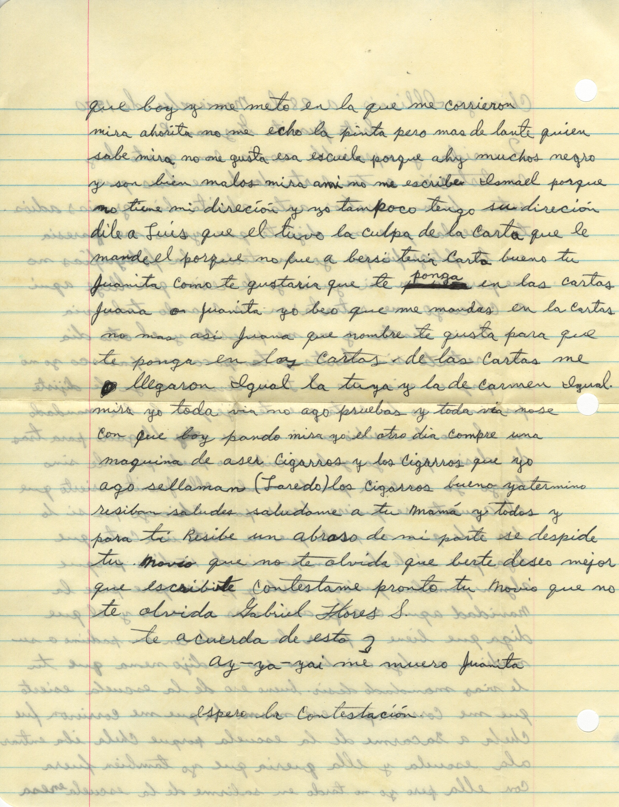

Carta 228 Noviembre 1970

Edición Digital
Querida y apreciable novia con gusto doy
contestación a tu carta donde me dises
que
estan bien nosotros asta ahorita bien gracias adios.
te acuerdas que me
dijiste que yo no me paresia
en la fotografia pos yo en todas las fotografias no
me paresco en ninguna de resien que llegue aqui
a Chicago me retrataron es
cuando toda via
no tenia lentes y no me paresco y el otro dia
me retrate sin
lentes y tampoco me paresco yo no
se porque. mira eso de Luis Serrano si ya le
dijiste
pos nimodo yo la carta que te dije que le bia mandado
si el no la
resibio ami no me a llegado para tras
de desir que yo yale escribi no puedo
provarle sino
tengo yo su carta que le mande olle Juanita esierto que
el
aguate se quiere benir para Chicago pos si lo
bes dile que no puede que ne sesita
una carta que
diga que si le dan un permiso de 15 dias porque
algun familiar
quiere berlo y quiere que pase la
navidad aqui o algo asi. mas o menos y el
que
diga que biene a pasar la navidad con su padrino o su
madrina o algo asi.
bueno eso de la escuela esierto
que me corrieron pero ese mismo dia que me
corrieron fue
Chela a sacarme de la escuela porque Chela iba entrar
ala
escuela y ella queria que yo tambien fuera
con ella pero yo no tardo en salirme de
la escuela en esa
que boy y me meto en la que me corrieron
mira ahorita no me echo la pinta pero mas
de lante quien
sabe mira no me gusta esa porque ahy muchos negro
y son bien
malos mira a mi no me escribe Ismael porque
no tiene direción y no tampoco tengo su
direción
dile a Luis que el tuvo la culpa de la carta que le
mande el porque
no fue a bersi tenia carta bueno tu
Juanita como te gustaria que te ponga en
las cartas
Juana o Juanita yo beo que me mandas en las cartas
no mas asi Juana
que nombre te gusta para que
te ponga en las cartas. de las cartas me
llegaron
Igual la tuya y la de Carmen Igual.
mira yo toda via no ago pruebas y toda via
nose
con que boy pando misa yo el otro dia compre una
maquina de aser cigarros
y los cigarros que yo
ago sellaman (Laredo) los cigarros bueno yatermino
resiban saludos saludame a tu mamá y todos y
para ti Resibe un abraso de mi
parte se despide
tu novio que no te olvida que berte deseo mejor
que
escribirte contestame pronto
te acuerda de esto
ay-ya-yai me muero Juanita
espero la contestación
Metadatos
- Correspondiente: Gabriel Flores Serrano
- Localización: Chicago, Illinois, Estados Unidos